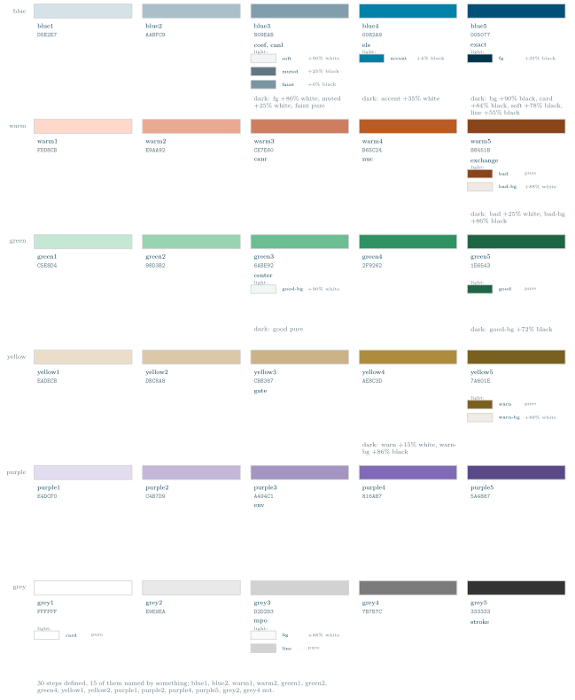

Examples / 00
The palette

The whole theme: the scales, their steps, and every value derived from a step.
There is no blend of one step into the next on this page, because the theme has no such colour. A bar running blue1 through blue2 to blue3 looks like a continuous scale and would be lying: what lies between two steps is nothing. What does exist beside a step is a tint or a shade of it – the page tokens – and those are the small chips, each drawn in the colour it actually is and labelled with the mix it is made by.
Nothing here is written here, either. tex/style/tikz-tensors-palette.tex is generated by scripts/theme.py out of theme/tokens.toml and holds the scales, the steps, the hex, the roles, the chips and the count; this file is the layout and nothing else. A chart whose captions are typed beside the thing they describe can claim a role the theme does not assign, and the reader has no way to tell. `scripts/theme.py --check` fails in CI if the two drift.
The codes are scales: each runs light to dark in three steps, and that ordering is the thing being specified. A pair that should read as a pair takes the same step on two scales – canl and canr at step 1, edge and edgec at step 3 – and a figure that needs a stronger or weaker version of a colour moves along its own scale rather than reaching for a new one.
Under each step: its name, its hex, the figure styles that name it, then the light page tokens made from it as chips, then the dark ones as text. The dark tokens have no chip because the TeX side of the theme defines colours for the light page only; theme/theme.css carries both.
Every block and chip is outlined, because the grey scale starts at paper white: an unoutlined white block would be a claim with nothing to see.
A step that nothing names is left blank and the count at the foot says how many those are. `color=` and not a bare option, because several step names are also styles (coef, center, mpo, gate): TikZ resolves an option as a key first, so \fill[gate] fills with the style.
The picture
\begin{tikzpicture}[x=1cm, y=1cm] \def\col{0.72} % the column grid the generated data counts in \def\wide{3.9} % a column, wide enough for the longest token list \def\pitch{4.6} \foreach \name/\r in \tnpalettescales \node[anchor=east, font=\scriptsize, text=ttmuted] at (-0.2,-\r*\pitch+0.28) {\name}; % the steps: three blocks, discrete, because three is how many there are \foreach \step/\hex/\fig/\dark/\x/\r in \tnpalette { \filldraw[color=\step, draw=ttline, tn line] (\x*\col,-\r*\pitch) rectangle ++(\wide,0.56); \node[anchor=north west, font=\scriptsize, text=ttfg] at (\x*\col,-\r*\pitch-0.10) {\step}; \node[anchor=north west, font=\ttfamily\scriptsize, text=ttmuted] at (\x*\col,-\r*\pitch-0.46) {\hex}; \node[anchor=north west, font=\scriptsize, text=ttfg] at (\x*\col,-\r*\pitch-0.86) {\fig}; \node[anchor=north west, font=\scriptsize, text=ttmuted, align=left, text width=\wide cm] at (\x*\col,-\r*\pitch-2.98) {\dark}; } % the values made from a step: real colours, drawn as themselves, one per line \foreach \c/\token/\mix/\x/\r/\i in \tnpalettechips { \ifnum\i=0 \node[anchor=west, font=\tiny, text=ttmuted] at (\x*\col,-\r*\pitch-1.36) {light:}; \fi \fill[color=\c, draw=ttline, tn line] (\x*\col,-\r*\pitch-1.78-\i*0.52) rectangle ++(1.0,0.34); \node[anchor=west, font=\tiny, text=ttfg] at (\x*\col+1.12,-\r*\pitch-1.61-\i*0.52) {\token}; \node[anchor=west, font=\tiny, text=ttmuted] at (\x*\col+2.15,-\r*\pitch-1.61-\i*0.52) {\mix}; } % the count, so the length of the chart is not read as the size of the theme \node[anchor=north west, font=\scriptsize, text=ttmuted, align=left, text width=12cm] at (0,-5*\pitch-3.30) {\tnpalettecount}; \end{tikzpicture}
The whole file
\documentclass[border=4pt]{standalone} \usepackage{amsmath} \usepackage{tikz-tensors} \input{tikz-tensors-palette} \begin{document} \begin{tikzpicture}[x=1cm, y=1cm] \def\col{0.72} % the column grid the generated data counts in \def\wide{3.9} % a column, wide enough for the longest token list \def\pitch{4.6} \foreach \name/\r in \tnpalettescales \node[anchor=east, font=\scriptsize, text=ttmuted] at (-0.2,-\r*\pitch+0.28) {\name}; % the steps: three blocks, discrete, because three is how many there are \foreach \step/\hex/\fig/\dark/\x/\r in \tnpalette { \filldraw[color=\step, draw=ttline, tn line] (\x*\col,-\r*\pitch) rectangle ++(\wide,0.56); \node[anchor=north west, font=\scriptsize, text=ttfg] at (\x*\col,-\r*\pitch-0.10) {\step}; \node[anchor=north west, font=\ttfamily\scriptsize, text=ttmuted] at (\x*\col,-\r*\pitch-0.46) {\hex}; \node[anchor=north west, font=\scriptsize, text=ttfg] at (\x*\col,-\r*\pitch-0.86) {\fig}; \node[anchor=north west, font=\scriptsize, text=ttmuted, align=left, text width=\wide cm] at (\x*\col,-\r*\pitch-2.98) {\dark}; } % the values made from a step: real colours, drawn as themselves, one per line \foreach \c/\token/\mix/\x/\r/\i in \tnpalettechips { \ifnum\i=0 \node[anchor=west, font=\tiny, text=ttmuted] at (\x*\col,-\r*\pitch-1.36) {light:}; \fi \fill[color=\c, draw=ttline, tn line] (\x*\col,-\r*\pitch-1.78-\i*0.52) rectangle ++(1.0,0.34); \node[anchor=west, font=\tiny, text=ttfg] at (\x*\col+1.12,-\r*\pitch-1.61-\i*0.52) {\token}; \node[anchor=west, font=\tiny, text=ttmuted] at (\x*\col+2.15,-\r*\pitch-1.61-\i*0.52) {\mix}; } % the count, so the length of the chart is not read as the size of the theme \node[anchor=north west, font=\scriptsize, text=ttmuted, align=left, text width=12cm] at (0,-5*\pitch-3.30) {\tnpalettecount}; \end{tikzpicture} \end{document}